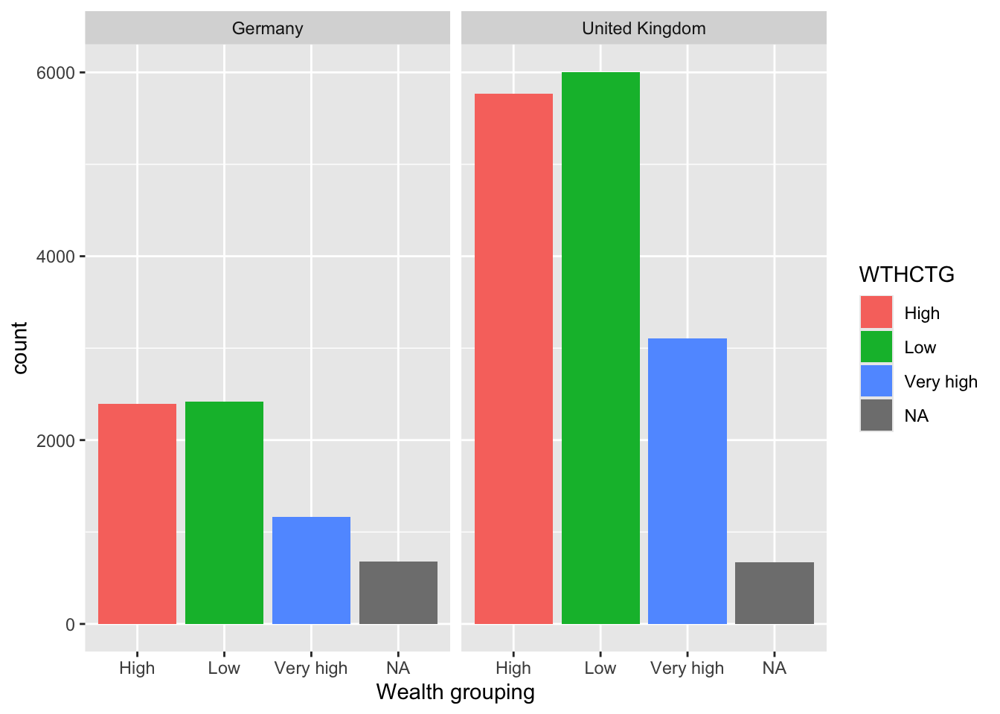

Descriptive Statistics
Getting set up
Ensure you have the PISA 2025 data frame loaded. If you can see the PISA_2025 data frame in your environment window (at the top right of your screen), there is no need to reload.
1 Descriptive statistics
1.1 The PISA assessments
The first International Large-Scale Assessment (ILSA) comparing the learning outcomes of school students between countries was attempted in the 1960s. However, ILSAs only became established and regular in the late 1990s and 2000s.
The OECD’s Programme for International Student Assessment (PISA) has tested 15-year-old students in a range of “literacies” or “competencies” every three years since 2000. There is a rotating focus on reading, mathematics and science.
| PISA cycle | Major focus | Other core domains | Innovative domain |
|---|---|---|---|
| 2000 | Reading | Mathematics, Science | — |
| 2003 | Mathematics | Reading, Science | Problem Solving |
| 2006 | Science | Reading, Mathematics | — |
| 2009 | Reading | Mathematics, Science | — |
| 2012 | Mathematics | Reading, Science | Creative Problem Solving |
| 2015 | Science | Mathematics, Reading | Collaborative Problem Solving |
| 2018 | Reading | Mathematics, Science | Global Competence |
| 2022 | Mathematics | Reading, Science | Creative Thinking |
| 2025 | Science | Mathematics, Reading | Learning in the Digital World |
| 2029 | Reading | Mathematics, Science | Media and AI Literacy |
In addition to reading, mathematics and science, PISA has tested students on a range of “novel” competencies including problem-solving, global competence, financial literacy, and creative thinking. In addition to these tests, PISA also administers questionnaires to students, teachers and parents to identify “factors” which explain test score differences within and between countries.
Since 2000, more than 90 “countries and economies” and around 3,000,000 students have participated in PISA. The growth in the number of countries participating in each cycle of PISA is reflected in the growth in the number of students taking the PISA tests and responding to the PISA questionnaires, as shown in Table 1.
Table 1: Number of students participating in PISA by year
| Year | Number completing assessment |
|---|---|
| 2000 | 265,000 |
| 2003 | 275,000 |
| 2006 | 400,000 |
| 2009 | 470,000 |
| 2012 | 510,000 |
| 2015 | 540,000 |
| 2018 | 600,000 |
| 2022 | 690,000 |
| 2025 | 760,000 |
There is a degree of inherent error in all educational and psychological assessments - and indeed in all social or physical measurement. ILSAs such as PISA may be more prone to error because their comparisons across large and diverse populations make them particularly complex. However, it is particularly important to minimise the error in ILSAs because they influence education policy and practice across a large number of education systems, impacting a vast population of students beyond those sampled for the assessments.
The technical report for PISA 2025 is not yet published. According to the OECD (2019), three sources of error are worth considering. First, sampling error, uncertainty in the degree to which results from the sample generalise to the wider population - in 2018, the OECD average sampling error was 0.4 of a PISA point score (the value was not reported for 2022). Second, measurement error, uncertainty in the extent to which test items measure proficiency. In 2018, the measurement error was around 0.8 of a point in mathematics and science and 0.5 of a score point in reading (the measurement error was not reported for 2022). Third, the link error is the uncertainty in comparison between scores in different years. For comparisons of science scores between 2018 and 2015, the link error is 1.5 points. For 2018-2022, the link errors are reading (1.47), mathematics (2.24) and science (1.61) (OECD 2022, 293)
PISA uses a probabilistic, stratified clustered survey design (Jerrim et al. 2017). However, sampling issues including sample representativeness, non-response rates and population coverage have been identified (Zieger et al. 2022; Rutkowski and Rutkowski 2016; Gillis, Polesel, and Wu 2016; Hopmann, Brinek, and Retzl 2007). Furthermore, Anders et al. (2021) and Jerrim (2021) have shown that assumptions for imputing values (imputing means estimating any missing values based on existing data - for example by adding a mean or mode score for a missing test) for non-participating students used to construct the sample may have significant impacts on achievement scores.
Since PISA 2015, the majority of participating countries have switched from paper-based assessment to computer-based assessment (Jerrim 2016). A randomised controlled trial conducted by the OECD prior to the switch indicated a difference in score between the two modes of delivery. The OECD introduced an adjustment to compensate for this difference, but it is not entirely removed by the adjustment Jerrim et al. (2018), with implications for any time series comparisons between PISA cycles. Nonetheless, Jerrim (2016) notes that “in terms of cross-country rankings, there remains a high degree of consistency… the vast majority of countries are simply ‘shifted’ by a uniform amount” (pp. 508-509).
In summary, comparisons within and between countries and comparisons over time using ILSAs need careful interpretations that bear in mind the specific design of each ILSA. In practice, this means considering a range of potential explanations for score differences. Does a difference in science ranking between two countries simply reflect sampling error? Does the same parental occupation or home possessions amount to the same economic, social and cultural status in different countries (e.g. the social status of a parent as a teacher or the economic status of the number of cars a family owns)? Does a difference in mathematical self-efficacy (i.e. student self-confidence in mathematics) between the USA and Japan reflect sociocultural differences in self-enhancement and modesty, respectively? How do score differences between boys and girls indicate gender inequalities in education that reflect wider society?
For useful critique and discussion of the construction of the measure of socio-economic status in PISA data see: Avvisati’s (2020) paper.
1.2 Using the command line for descriptive statistics
For further reading on descriptive statistics see chapter 5 of Navaro’s Learning Statistics with R.
We are going to focus on the following variables in the PISA_2025 data frame:
CNT the country of the student.
HOMEPOS is a self-reported measure of a student’s wealth, linked to the number of possessions students report having in their home (e.g. books, computers, cars, phones etc.). It is a numeric variable, with a mean of -0.476, minimum of -10.40 and a maximum of 8.33.
ESCS is the index of economic, social and cultural status. It might be thought of as a measure of economic and social status (with some cultural capital measures included). It is a numeric variable, with a mean of -0.317, minimum of -7.39 and a maximum of 4.55. It is constructed from three items: highest parental occupation (
HISEI), highest level of parental education (PARED), and home possessions (HOMEPOS), participants having their own room, a computer for school work, musical instruments and works of art.PV1MATH, PV1SCIE, PV1READ are the plausible value scores for achievement tests in mathematics, science and reading, respectively. The full achievement tests are long, so each student only completes a subset of items (which still takes 2 hours). Statistical models are then used to calculate an overall score, based on the students’ answers to the subset of questions, as if students had answered all the questions. Ten different approaches (ten different statistical models, that take different approaches to estimating the overalls score are used) to calculating a representative scores, plausible values are used, leading to ten different plausible values. In this course, will just use the first plausible value (PV1). This differs from the PISA recommendation for using the scores, but simplifies things for teaching. For more on plausible values see: What are plausible values?
ST004D01T is the gender variable and and can take the values:
Male,FemaleorNA.
The simplest way to find information about a data frame is to use the console. You can type commands to find out about a data frame directly into the console. To preform an action on a particular column (also called a vector), we use the $ symbol. For example, to refer to country data (which is in the vector CNT) we would use PISA_2025$CNT
In the command line, if you want to find the mean of all the repsonses to the HOMEPOS (Home Possessions, a proxy for wealth) item you can type the following:
mean(PISA_2025$HOMEPOS)
Notice that you get this response: [1] NA. An NA in the data frame can occur for a number of reasons, for example it may indicate a response is missing or incomplete, hence the mean can’t be calculated. To tell R to ignore NAs, we add na.rm = TRUE to a function:
mean(PISA_2025$HOMEPOS, na.rm = TRUE)
You can use the command line with a number of functions to find useful information about a data frame. R has a number of standard functions that might be useful for descriptive statistics. To find out details about data frames, you can use:
nrow()finds the number of rows (e.g.nrow(PISA_2025))ncol()finds the number of columns (e.g.ncol(PISA_2025))names()finds the names of all the columns (e.g.names(PISA_2025))
If you are working on individual columns, e.g. max(PISA_2025$PV1SCIE), you can use:
mean()- finds the arithmetic meanmedian()- finds the median valuemin()- finds the minimum valuemax()- finds the maximum valuesd()- finds the standard deviationrange()- finds the range of valueslength()- finds the number of itemsunique()- finds the unique items
Maybe surprisingly, there is no function to calculate the mode in the tidyverse package. However, you can get one by loading the modeest package and using the most frequent value (mfv) function.
# Install the modeest package to calculate a mode
library(modeest)
library(tidyverse)
# The mode can be found with the most frequent value (mfv) function
# We can look at about number of books in the home (ST255Q01JA)
# Then use mfv to find the mode value (note the na.rm=TRUE to avoid NAs)
mfv(PISA_2025$ST255Q01JA, na.rm = TRUE)[1] 26-100 books
12 Levels: There are no books 1-10 books 11-25 books ... no responseTo get a list of the item descriptors, you can use this code:
$CNT
[1] "Country code 3-character"
$CNTSCHID
[1] "Intl. School ID"
$CNTSTUID
[1] "Intl. Student ID"
$OECD
[1] "OECD country"
$LANGTEST_QQQ
[1] "Language Questionnaire"
$ST003D02T
[1] "Student (Standardized) Birth - Month"
$ST003D03T
[1] "Student (Standardized) Birth -Year"
$ST004D01T
[1] "Students' gender from sampling data (Female/Male)"
$ST250Q01JA
[1] "Which of the following are in your <home>? - A room of your own"
$ST250Q02JA
[1] "Which of the following are in your <home>? - A computer (laptop, desktop, or tablet) that you can use for school work"
$ST250Q03JA
[1] "Which of the following are in your <home>? - Educational Software or Apps"
$ST250Q04JA
[1] "Which of the following are in your <home>? - Your own <cell phone> with Internet access (e.g. smartphone)"
$ST250Q05JA
[1] "Which of the following are in your <home>? - Internet access (e.g. Wi-fi) (excluding through smartphones)"
$ST251Q01JA
[1] "How many of these items are there at your <home>? - Cars, vans, or trucks"
$ST251Q06JA
[1] "How many of these items are there at your <home>? - Musical instruments (e.g. guitar, piano, <country-specific example>)"
$ST254Q01JA
[1] "How many of the following <digital devices> are in your <home>? - Televisions"
$ST254Q02JA
[1] "How many of the following <digital devices> are in your <home>? - Desktop computers"
$ST254Q03JA
[1] "How many of the following <digital devices> are in your <home>? - Laptop computers or notebooks"
$ST254Q04JA
[1] "How many of the following <digital devices> are in your <home>? - Tablets (e.g. <iPad®>, <BlackBerry® PlayBook™>"
$ST254Q05JA
[1] "How many of the following <digital devices> are in your <home>? - E-book readers (e.g. <Kindle™>, <Kobo>, <Bookeen>)"
$ST255Q01JA
[1] "How many books are there in your <home>?"
$ST488Q01DA
[1] "Do you possess the following items for your own personal use? - Two pairs of properly fitting shoes, <including a pair of all-weather shoes>"
$ST488Q02DA
[1] "Do you possess the following items for your own personal use? - Some new (not second-hand) clothes"
$ST488Q08DA
[1] "Do you possess the following items for your own personal use? - Outdoor leisure equipment (e.g. <bicycle, roller skates, racket>)"
$ST488Q09DA
[1] "Do you possess the following items for your own personal use? - Indoor games (e.g. <board games, videogame console>)"
$ST401Q05DA
[1] "Do you do the following <things> regularly? - Invite friends to play and eat from time to time"
$ST403Q01DA
[1] "Based on this definition, how many parents and/or guardians do you have?"
$ST127Q02TA
[1] "Have you ever repeated a <grade>? - Repeated at <ISCED 2>"
$ST062Q03TA
[1] "In the last two full weeks of school, how often did the following things occur? - I arrived late for school"
$ST034Q01TA
[1] "Thinking about your school: to what extent do you agree with the following statements? - I feel like an outsider (or left out of things) at school."
$ST038Q08NA
[1] "During the past 12 months, how often have you had the following experiences in school? - Other students spread nasty rumours about me."
$ST265Q01JA
[1] "To what extent do you agree or disagree with the following statements? - I feel safe on my way to school"
$ST495Q03DA
[1] "How often have you been involved with the following activities in the last 12 months? - Joining a peaceful march or rally related to an environmental issue"
$ST324Q11JA
[1] "To what extent do you agree or disagree with the following statements? - School has been a waste of time"
$ST016Q01NA
[1] "Overall, how satisfied are you with your life as a whole these days?"
$ST493Q01DA
[1] "To what extent do you agree or disagree with the following statements? - Your status in society is something that you can’t really change very much"
$ST420Q01DA
[1] "To what extent do you agree or disagree with the following statements? - You have a certain amount of intelligence, and you really can’t do much to change it"
$ST420Q02DA
[1] "To what extent do you agree or disagree with the following statements? - You have a certain amount of science ability, and you really can’t do much to change it"
$ST307Q07JA
[1] "To what extent do you agree or disagree with the following statements? - I quit doing homework if it is too long"
$ST307Q10JA
[1] "To what extent do you agree or disagree with the following statements? - I give up easily"
[ reached 'max' / getOption("max.print") -- omitted 34 entries ]Alternatively, you can read a complete list of the items in PISA here: PISA 2025 student survey item descriptors
A useful way to get a quick summary of what is in a data.frame is, the summary command. This command outputs the minimum, median, mean, maximum (and 1st and 3rd quartile values, i.e. the values at 25% and 75% of the range). For example, to get a sense of the science score variable (PV1SCIE) we can use:
2 Filtering Data frames
We will now learn how to calculate means of subgroups of data frames, using the filter and summarise functions. We can use filter to focus on only a subset of our data.frame. For example, below, we can use filter to focus only on responses from UK students.
Note, in R the = and == operators have slightly different meanings. = can be used to assign a value, for example to set x to 10.
By contrast, when checking is two items are equal, use ==
In line 4 below, we filter for UK responses. Note that, in filter we use == rather than =.
Then we use summarise to calculate the means of the variables we are interested in, for example, students science (PV1SCIE), mathematics (PV1MATH) and reading scores. We can also find the total number of students entered in the UK, using n(), which counts the number of rows.
- 1
-
line 1 passes the whole
PISA_2025dataset and pipes it into the next line using%>% - 2
-
line 2
filtersout any results that are not from the UK by finding all the rows whereCNTequals=="United Kingdom". Note the==for checking equality. The result is then piped (%>%) to the next line - 3
-
line 3 uses
summariseto calculate, for the UK, the mean ofPV1SCIE(the science score) and puts the result in a column calledMeanSci - 4
-
line 4 uses
summariseto calculate, for the UK, the mean ofPV1MATH(the maths score) and puts the result in a column calledMeanMath - 5
-
line 5 uses the
n()function to count the number of students in the UK sample
# A tibble: 1 × 3
MeanSci MeanMath Total
<dbl> <dbl> <int>
1 499. 477. 15546If you want to filter by a different vector (that is, a different column in the table), don’t forget to change the name of the vector in the filter command, for example, to find the mean mathematics and science scores, and total number of pupils who are girls (using the gender variable ST004D01T). We change the vector to filer on to ST004D01T and the condition to Female.
Don’t forget to use the %>% and the == in filter!
# A tibble: 1 × 3
MeanSci MeanMath Total
<dbl> <dbl> <int>
1 441. 422. 309380You can add multiple filters by using the & operator which means AND. Later on we will also meet | (the vertical line symbol), which means OR. So if you want to find the scores of male students in the UK you would use:
Often we are interested in summary data across multiple subgroups. We can then tell R to group_by, for example, group_by(CNT), to get a summary of data for subgroups.
- 1
-
line 1 passes the whole
PISA_2025dataset and pipes it into the next line using%>% - 2
-
line 2 uses
group_byto use the values inCNTto group the data - i.e. the calculate the means for each country - 3
-
line 3 uses
summariseto calculate the mean ofPV1SCIE(the science score) and puts the result in a column calledMeanSci - 4
-
line 4 uses
summariseto calculate the mean ofPV1MATH(the maths score) and puts the result in a column calledMeanMath - 5
-
line 5 uses the
n()function to count the number of students the sample
# A tibble: 90 × 4
CNT MeanSci MeanMath Total
<fct> <dbl> <dbl> <int>
1 Albania 432. 431. 5959
2 United Arab Emirates 457. 453. 34639
3 Argentina 413. 384. 11092
4 Armenia 367. 375. 6804
5 Australia 509. 476. 14658
6 Austria 502. 481. 6987
7 Azerbaijan 412. 427. 7432
8 Belgium NA NA 7456
9 Bulgaria 423. 407. 6830
10 Brazil 399. 369. 30140
11 Brunei Darussalam 440. 435. 5730
12 Canada 500. 478. 24601
13 Switzerland 498. 496. 7597
14 Chile 454. 413. 6573
15 Colombia 420. 386. 7268
16 Costa Rica 422. 385. 6881
17 Czechia 503. 490. 8462
18 Germany 492. 470. 6659
19 Denmark 468. 463. 5098
20 Dominican Republic 362. 340. 7080
21 Ecuador 399. 370. 9128
22 Spain 481. 462. 29966
23 Estonia 528. 509. 6304
24 Finland 504. 470. 7668
25 France 482. 456. 6501
26 United Kingdom 499. 477. 15546
27 Georgia 421. 415. 6855
28 Greece 440. 428. 6858
29 Guatemala 351. 334. 7014
30 Hong Kong (China) 492. 518. 6445
31 Croatia 475. 453. 6424
32 Hungary 484. 464. 6387
33 Indonesia 401. 377. 14168
34 Ireland 500. 481. 6356
35 Iceland 442. 451. 3974
36 Israel 445. 435. 7330
37 Italy 487. 472. 8946
38 Jordan 411. 392. 8290
39 Japan 538. 526. 6554
40 Kazakhstan 438. 434. 22680
41 Kenya 338. 328. 6459
42 Kyrgyzstan 362. 363. 6645
43 Cambodia 374. 359. 5464
44 Korea 530. 527. 6859
45 Kosovo 356. 350. 6632
46 Lebanon 377. 381. 7382
47 Lithuania 483. 467. 7718
48 Luxembourg 475. 459. 6078
49 Latvia 466. 458. 6968
50 Macao (China) 541. 549. 4953
51 Morocco 352. 348. 6978
52 Moldova 424. 411. 6640
53 Mexico 416. 390. 7843
54 North Macedonia 379. 380. 6977
55 Malta 455. 441. 3680
56 Montenegro 436. 412. 6436
57 Mongolia 427. 422. 7146
58 Mauritius 438. 407. 5360
59 Malaysia 421. 399. 7624
60 Netherlands 489. 487. 6636
61 Norway 471. 452. 6469
62 New Zealand 513. 483. 5004
63 Peru 407. 383. 6991
64 Philippines 392. 383. 8072
65 Poland 498. 487. 7103
66 Portugal 487. 465. 6945
67 Paraguay 359. 336. 6507
68 Palestinian Authority 359. 354. 9647
69 Qatar 429. 411. 6674
70 B-S-J-Z (China) 603. 618. 12385
71 Kurdistan Region (Iraq) 354. 340. 5732
72 Dushanbe (Tajikistan) 333. 381. 5771
73 Ukrainian regions (17 of 27) 448. 431. 7105
74 Romania 437. 430. 7725
75 Rwanda 319. 313. 6622
76 Saudi Arabia 417. 392. 7272
77 Singapore 559. 561. 6551
78 El Salvador 386. 347. 7073
79 Serbia 428. 416. 7041
80 Slovak Republic 476. 471. 6682
81 Slovenia 472. 450. 7366
82 Sweden 485. 464. 6688
83 Chinese Taipei 534. 540. 7279
84 Thailand 446. 423. 8547
85 Türkiye 498. 465. 7702
86 Uruguay 444. 405. 6572
87 United States 494. 457. 4623
88 Uzbekistan 445. NA 8652
89 Viet Nam 459. 444. 7368
90 Zambia 318. 297. 5735In the console, R will truncate tables, so you might only see the first 10 countries of 80 in the data frame using the code above. One solution to this is to put the results of the summarising into a new data frame (e.g. summarydata) which you can then view from the environment window (and use for future processing). To do this you use the assign operator <-.
3 Creating summary tables and manipulating them
The PISA data frame is large (!) so it can often be helpful to create interim summary tables.
When using summarise, be careful to add a comma after each function, and check you have closed as many brackets as you open!
A useful function is table which creates a summary table of the counts of unique entries in a data frame. For example, we might want to know how many boys and girls there are by country in the whole data set.
In the example below, we will use select which creates a subset of a table by columns. For example, if I want to create a table of gender type by country, we need only include two columns from the PISA_2025 data frame: country (CNT) and gender (ST004D01T). We use the command select to focus on those two: select(CNT, ST004D01T).
To create a summary table, intuitively, we use the table function. There are two additional actions we need to do. First, because we piped the whole PISA_2025 data frame, if we apply table, then even though we have filtered by the UK, the data frame retains levels for all the other countries. If we don’t remove these levels, we will get a large data frame with many zero entries for the countries we have filtered out. The function droplevels() removes the levels for other countries (i.e. everything other than the United Kingdom). Finally, the output of table is a datatype called (appropriately) a table. Data frames are more easily manipulated so we convert the table into a data frame using as.data.frame(table(SchoolType)).
- 1
-
line 1 creates a new data frame,
GenderUKinto which the results manipulatedPISA_2025will be placed -PISA_2025is piped to the next steps - 2
-
line 2 uses
selectto select the columns of interestCNT(country) andST004D01T(gender) - 3
-
line 3 uses
filterto filter for only the entries for the UK - 4
-
line 4 - as we have filtered for the UK, we would get 0 entires for all the other levels (all the other countries). To stop those 0s confusing our table we use
droplevels()to ignore the levels we don’t need - 5
-
line 5 - to create summary of the counts, we use
tableto create a summary table. We turn the table into a data frame withas.data.frameto make it easier to manipulate - 6
- line 6 - print the table
CNT ST004D01T Freq
1 United Kingdom Female 7462
2 United Kingdom Male 8084You can open the GenderUKSummary data frame and see the summary data. Table has created a new column Freq which stores the results of the counts.
It might now be interesting to know what percentage the counts of genders represent. To achieve that, first we create a variable that is the total number of genders (to calculate the percentage). This variable is total, and we perform a simple sum on the count column - GenderUKSummary$Freq.
We then use the mutate function. mutate allows you to add a new column to a table. You pipe the data frame to mutate, and begin by giving the name of the new column you want, in this case the percentage of schools of each type, we will call this PerSch mutate(PerSch=. Then we set the value of that column to the percentage calculation: 100*(Freq/total). The Frequency count for each column will be multiplied by 100 and divided by the total.
- 1
-
line 1 - to calculate a percentage, you first need to find the total of the frequency column in
GenderUKSummary. We useGenderUKSummary$Freqto indicate the column andsumto find the total
- 2
-
line 2 - pipe
GenderUKSummaryso we can manipulate it - 3
-
line 3 - to add a new column (with the percentage in) we use
mutate. We give the name of the new columnPerSch =and set out the calculation we want to perform, dividing the frequency in each row, by the total and multiplying by 100:100*(Freq / total)
CNT ST004D01T Freq PerSch
1 United Kingdom Female 7462 47.99949
2 United Kingdom Male 8084 52.00051We can also get the same result by using the sum function inside mutate. Here PerSch is calculated for each row, taking the Freq value for that row and dividing it by the sum of Freq for all rows, i.e. calculating the percentage:
You can use the round function to display a given number of decimal places. Here, I have used round( ,2) to limit the percentage calculation to two significant figures.
4 Seminar activities
4.1 Task 1 - Using the command line
- Using the command line, find out:
- The number of students (i.e. the number of rows) in the PISA 2025 data frame
- The number of items in our data frame (i.e. the number of columns)
- The mean, maximum and minimum science score (don’t forget to use
$) - The unique values of
ST003D02T- what information do you think this column holds?
Answer
# Using the command line
# a) Find the number of students (i.e. the number of rows) in the PISA 2025 data frame
nrow(PISA_2025)
# b) The number of items in our data frame (i.e. the number of columns)
ncol(PISA_2025)
# c) The mean, maximum and minimum science score (don't forget to use $)
mean(PISA_2025$PV1SCIE)
max(PISA_2025$PV1SCIE)
min(PISA_2025$PV1SCIE)
# d) The unique values of ST003D02T - what information do you think this column holds?
unique(PISA_2025$ST003D02T)
# This column contains students' birth months
# You can find out the subtitle of columns using
attributes(PISA_2025$ST003D02T)4.2 Task 2 - Using the summary function
- Using
summaryfind:
- The maximum and minimum of the HOMEPOS (Wealth) variable
- The mean reading score
- The minimum science score in the data set
- Consider the distributions of the reading and science scores, and comment on any differences.
4.3 Task 3 - Creating summary tables
Make sure you have spelled the name of the variables PV1MATH, etc. correctly. They are case sensitive. You can use the function colnames(PISA_2025) to get a list of names and copy and paste them.
Find the total number of students who responded in the United States, and their mean science, mathematics and reading scores. Compare that to the responses from the UK. Don’t forget to pipe (
%>%) each step!Filter the data frame for the UK and
group_bygender (which isST004D01T). Use summarise to find the maximum, minimum and mean scores for boys and girls in mathematics in the UK.Filter the data frame for the UK, the US, and
group_bygender (which isST004D01T) and country. Use summarise to compare mathematics and science achievement.
Answer
# Summarising responses in the US and UK and finding means
PISA_2025 %>%
filter(CNT == "United Kingdom" | CNT == "United States")%>%
group_by(CNT)%>%
summarise(MeanSci = mean(PV1SCIE),
MeanMath = mean(PV1MATH),
MeanRead = mean(PV1READ),
Total = n())
# Comparing male and female mathematics performance in the UK
PISA_2025 %>%
filter(CNT == "United Kingdom")%>%
group_by(ST004D01T)%>%
summarise(MeanUKMath = mean(PV1MATH),
MaxUKMath = max(PV1MATH),
MinUKMath = min(PV1MATH))
# Comparing male and female mathematics performance in the UK and US
PISA_2025 %>%
filter(CNT == "United Kingdom" | CNT== "United States" )%>%
group_by(ST004D01T, CNT)%>%
summarise(MeanMath = mean(PV1MATH),
MaxMath = max(PV1MATH),
MinMath = min(PV1MATH))Don’t forget to use the pipe operator %>% between each function!
ST265Q01JA asks participants “To what extent do you agree or disagree with the following statements? - I feel safe on my way to school”. For students in France, find out the percentage of students who responded with the different options:
- Strongly Agree
- Agree
- Disagree
- Strongly disagree
- valid skip (filter rule)
- system missing
- not administered/not applicable
- invalid
- no response.
(Hint: don’t forget to droplevels()).
Answer
# Finding the percentage of students who feel safe on the way to school
safety_data <- PISA_2025 %>%
select(CNT, ST265Q01JA)%>%
filter(CNT == "France")%>%
droplevels()
# summarise as a table
safety_data <- as.data.frame(table(safety_data))
# find total number of students
Total = sum(safety_data$Freq)
# calculate percentage
safety_data <- safety_data%>%
mutate(safety_data = round((Freq * 100 / Total), 1))
safety_dataST251Q06JA asks students if they have a musical instrument in their home. What percentage of students in the UK have no instruments in their home? What is the percentage in Korea?
Answer
# Finding the percentage of students with no musical instruments in the UK and Korea
# Select the relevant variables, filter for the countries and group - dropping levels to cut unnecessary countries
music_data <- PISA_2025 %>%
select(CNT, ST251Q06JA)%>%
filter(CNT == "United Kingdom"|CNT == "Korea")%>%
group_by(ST251Q06JA, CNT)%>%
droplevels()
# Convert to a data frame
music_data <- as.data.frame(table(music_data))
# Mutate to add a column with the percentage calculation
music_data <- music_data %>%
group_by(CNT) %>% # group to get country totals
mutate(Total = sum(Freq)) %>%
mutate(PercComp = round((Freq * 100 / Total), 1))
music_dataDon’t forget to use the pipe operator %>% between each function!
4.4 Categorising data
A useful analytical choice is to categorise some a numerical variable into ordinal classes. For example, rather than treating HOMEPOS as a continuous scale, you might want to split into high and low wealth groups (for example, those above and below the mean value).
To do this, first calculate the mean mean(HOMEPOS). Then we add a new vector, which we will call wealthclass using the mutate function. We set the value of wealthclass using ifelse. If HOMEPOS is more than the mean score, we set wealthclass to High, and if it is anything else, we set it to Low. We do that using wealthclass = ifelse(HOMEPOS > MeanUKwealth, "High", "Low"). Note, in ifelse, the first value is returned if the identity is true (i.e. if HOMEPOS > MeanUKwealth wealthclass is set to High). If the value if not true, the second value is set (e.g. if HOMEPOS is not > MeanUKwealth then wealthclass is set to LOW).
For example, create a data frame of UK participants HOMEPOS sorted into HIGH and LOW categories.
# Create a data frame of UK responses
UK_PISA_2025 <- PISA_2025 %>%
select(CNT, HOMEPOS) %>%
filter(CNT == "United Kingdom") %>%
4 mutate(wealthclass = ifelse(HOMEPOS > mean(HOMEPOS, na.rm=TRUE),
"High",
"Low"))
UK_PISA_2025- 4
-
line 4 - mutate to create a new column
wealthclass- if HOMEPOS is more than mean(HOMEPOS), set the column to “High” otherwise set it to “Low”
# A tibble: 15,546 × 3
CNT HOMEPOS wealthclass
<fct> <dbl> <chr>
1 United Kingdom -0.741 Low
2 United Kingdom 0.212 Low
3 United Kingdom 0.0591 Low
4 United Kingdom -0.0488 Low
5 United Kingdom -1.73 Low
6 United Kingdom -0.400 Low
7 United Kingdom -0.780 Low
8 United Kingdom 0.204 Low
9 United Kingdom -0.145 Low
10 United Kingdom -6.48 Low
11 United Kingdom -1.15 Low
12 United Kingdom -0.941 Low
13 United Kingdom 0.333 High
14 United Kingdom 0.805 High
15 United Kingdom -1.18 Low
16 United Kingdom -0.318 Low
17 United Kingdom -0.227 Low
18 United Kingdom 0.271 High
19 United Kingdom 0.604 High
20 United Kingdom -0.596 Low
21 United Kingdom -0.0599 Low
22 United Kingdom 0.498 High
23 United Kingdom 0.543 High
24 United Kingdom 0.0586 Low
25 United Kingdom -0.304 Low
26 United Kingdom 0.939 High
27 United Kingdom -0.526 Low
28 United Kingdom 0.570 High
29 United Kingdom 0.412 High
30 United Kingdom 1.47 High
31 United Kingdom -1.16 Low
32 United Kingdom -0.724 Low
33 United Kingdom 1.75 High
34 United Kingdom -0.737 Low
35 United Kingdom 0.490 High
36 United Kingdom 0.442 High
37 United Kingdom -0.400 Low
38 United Kingdom -0.765 Low
39 United Kingdom 0.0564 Low
40 United Kingdom 1.43 High
41 United Kingdom 1.16 High
42 United Kingdom -0.966 Low
43 United Kingdom 0.310 High
44 United Kingdom 0.272 High
45 United Kingdom 0.778 High
46 United Kingdom -0.680 Low
47 United Kingdom -0.159 Low
48 United Kingdom -0.851 Low
49 United Kingdom -1.02 Low
50 United Kingdom 0.452 High
51 United Kingdom NA <NA>
52 United Kingdom NA <NA>
53 United Kingdom NA <NA>
54 United Kingdom -1.45 Low
55 United Kingdom NA <NA>
56 United Kingdom NA <NA>
57 United Kingdom 2.00 High
58 United Kingdom -0.842 Low
59 United Kingdom 0.271 High
60 United Kingdom -0.787 Low
61 United Kingdom -0.680 Low
62 United Kingdom NA <NA>
63 United Kingdom -2.23 Low
64 United Kingdom -0.114 Low
65 United Kingdom 1.39 High
66 United Kingdom -0.896 Low
67 United Kingdom -1.01 Low
68 United Kingdom -0.144 Low
69 United Kingdom -2.51 Low
70 United Kingdom 0.557 High
71 United Kingdom 2.18 High
72 United Kingdom 1.24 High
73 United Kingdom 0.0964 Low
74 United Kingdom 0.285 High
75 United Kingdom 0.0750 Low
76 United Kingdom -1.04 Low
77 United Kingdom 0.00833 Low
78 United Kingdom 0.130 Low
79 United Kingdom 0.843 High
80 United Kingdom 0.233 Low
81 United Kingdom 0.124 Low
82 United Kingdom 0.272 High
83 United Kingdom 1.33 High
84 United Kingdom 0.162 Low
85 United Kingdom 0.737 High
86 United Kingdom 0.609 High
87 United Kingdom 0.275 High
88 United Kingdom 0.228 Low
89 United Kingdom 1.81 High
90 United Kingdom 1.81 High
91 United Kingdom 0.906 High
92 United Kingdom 0.641 High
93 United Kingdom 1.10 High
94 United Kingdom -0.133 Low
95 United Kingdom 0.163 Low
96 United Kingdom 1.19 High
97 United Kingdom 1.06 High
98 United Kingdom -0.0210 Low
99 United Kingdom 0.838 High
100 United Kingdom 0.725 High
101 United Kingdom 0.163 Low
102 United Kingdom 0.321 High
103 United Kingdom 0.642 High
104 United Kingdom 0.0515 Low
105 United Kingdom -0.833 Low
106 United Kingdom 0.0681 Low
107 United Kingdom 1.05 High
108 United Kingdom 0.206 Low
109 United Kingdom -0.791 Low
110 United Kingdom -0.805 Low
111 United Kingdom 0.994 High
112 United Kingdom 1.15 High
113 United Kingdom -0.777 Low
114 United Kingdom -1.55 Low
115 United Kingdom -1.15 Low
116 United Kingdom 1.82 High
117 United Kingdom 0.442 High
118 United Kingdom 1.55 High
119 United Kingdom -0.217 Low
120 United Kingdom -1.61 Low
121 United Kingdom 0.0255 Low
122 United Kingdom -1.67 Low
123 United Kingdom 1.96 High
124 United Kingdom 0.200 Low
125 United Kingdom -0.699 Low
126 United Kingdom 0.655 High
127 United Kingdom -0.297 Low
128 United Kingdom 0.968 High
129 United Kingdom -0.385 Low
130 United Kingdom 1.62 High
131 United Kingdom 0.365 High
132 United Kingdom 0.0250 Low
133 United Kingdom 0.0772 Low
134 United Kingdom -0.925 Low
135 United Kingdom 0.885 High
136 United Kingdom 1.49 High
137 United Kingdom 0.341 High
138 United Kingdom 1.18 High
139 United Kingdom -0.803 Low
140 United Kingdom -0.197 Low
141 United Kingdom 0.730 High
142 United Kingdom 1.54 High
143 United Kingdom 0.707 High
144 United Kingdom 2.03 High
145 United Kingdom -0.0413 Low
146 United Kingdom -0.621 Low
147 United Kingdom 0.0421 Low
148 United Kingdom 0.207 Low
149 United Kingdom -1.05 Low
150 United Kingdom 0.749 High
151 United Kingdom 1.13 High
152 United Kingdom 1.51 High
153 United Kingdom 0.176 Low
154 United Kingdom 0.825 High
155 United Kingdom -0.767 Low
156 United Kingdom 0.143 Low
157 United Kingdom 0.240 Low
158 United Kingdom -0.456 Low
159 United Kingdom -0.728 Low
160 United Kingdom NA <NA>
161 United Kingdom -0.495 Low
162 United Kingdom 1.57 High
163 United Kingdom 0.672 High
164 United Kingdom -0.520 Low
165 United Kingdom 0.187 Low
166 United Kingdom 0.636 High
167 United Kingdom -0.240 Low
168 United Kingdom -0.433 Low
169 United Kingdom -0.205 Low
170 United Kingdom -0.529 Low
171 United Kingdom -0.00773 Low
172 United Kingdom 0.858 High
173 United Kingdom 0.679 High
174 United Kingdom -0.218 Low
175 United Kingdom -0.584 Low
176 United Kingdom 0.703 High
177 United Kingdom 1.19 High
178 United Kingdom -0.251 Low
179 United Kingdom 0.0575 Low
180 United Kingdom NA <NA>
181 United Kingdom -1.35 Low
182 United Kingdom -0.767 Low
183 United Kingdom 0.151 Low
184 United Kingdom -0.383 Low
185 United Kingdom 0.637 High
186 United Kingdom -0.374 Low
187 United Kingdom 0.592 High
188 United Kingdom -0.777 Low
189 United Kingdom -0.0446 Low
190 United Kingdom 0.00788 Low
191 United Kingdom -0.0516 Low
192 United Kingdom -0.0128 Low
193 United Kingdom -0.365 Low
194 United Kingdom 0.479 High
195 United Kingdom -0.668 Low
196 United Kingdom -1.91 Low
197 United Kingdom 0.885 High
198 United Kingdom -1.36 Low
199 United Kingdom -1.47 Low
200 United Kingdom 0.534 High
201 United Kingdom 0.211 Low
202 United Kingdom -0.00786 Low
203 United Kingdom -0.0216 Low
204 United Kingdom 0.369 High
205 United Kingdom -0.945 Low
206 United Kingdom -1.91 Low
207 United Kingdom -0.199 Low
208 United Kingdom -0.986 Low
209 United Kingdom -1.27 Low
210 United Kingdom -1.62 Low
211 United Kingdom -0.125 Low
212 United Kingdom -0.351 Low
213 United Kingdom -0.257 Low
214 United Kingdom 0.347 High
215 United Kingdom -1.56 Low
216 United Kingdom -0.522 Low
217 United Kingdom -0.988 Low
218 United Kingdom 0.0394 Low
219 United Kingdom -1.13 Low
220 United Kingdom 0.921 High
221 United Kingdom -0.916 Low
222 United Kingdom -1.17 Low
223 United Kingdom -0.763 Low
224 United Kingdom 0.0894 Low
225 United Kingdom -0.882 Low
226 United Kingdom NA <NA>
227 United Kingdom -1.00 Low
228 United Kingdom -0.699 Low
229 United Kingdom 0.385 High
230 United Kingdom -2.00 Low
231 United Kingdom -0.253 Low
232 United Kingdom -0.512 Low
233 United Kingdom -0.778 Low
234 United Kingdom 0.183 Low
235 United Kingdom -1.10 Low
236 United Kingdom -1.21 Low
237 United Kingdom -1.27 Low
238 United Kingdom -1.45 Low
239 United Kingdom -0.973 Low
240 United Kingdom 0.759 High
241 United Kingdom 2.48 High
242 United Kingdom 1.65 High
243 United Kingdom 1.29 High
244 United Kingdom 0.554 High
245 United Kingdom 0.794 High
246 United Kingdom 2.00 High
247 United Kingdom 0.142 Low
248 United Kingdom 0.751 High
249 United Kingdom -0.956 Low
250 United Kingdom 1.14 High
251 United Kingdom -1.23 Low
252 United Kingdom 1.16 High
253 United Kingdom -1.06 Low
254 United Kingdom 1.30 High
255 United Kingdom -0.194 Low
256 United Kingdom 0.169 Low
257 United Kingdom 0.998 High
258 United Kingdom 0.502 High
259 United Kingdom 1.35 High
260 United Kingdom 1.30 High
261 United Kingdom 0.0322 Low
262 United Kingdom 1.32 High
263 United Kingdom NA <NA>
264 United Kingdom 1.17 High
265 United Kingdom 0.708 High
266 United Kingdom 0.524 High
267 United Kingdom 0.504 High
268 United Kingdom 0.404 High
269 United Kingdom 0.457 High
270 United Kingdom -0.266 Low
271 United Kingdom 0.764 High
272 United Kingdom -0.390 Low
273 United Kingdom 0.678 High
274 United Kingdom 0.0250 Low
275 United Kingdom -1.21 Low
276 United Kingdom 0.909 High
277 United Kingdom 0.231 Low
278 United Kingdom 0.622 High
279 United Kingdom 0.301 High
280 United Kingdom 0.507 High
281 United Kingdom 0.726 High
282 United Kingdom 0.590 High
283 United Kingdom -1.40 Low
284 United Kingdom -1.18 Low
285 United Kingdom -1.19 Low
286 United Kingdom 0.341 High
287 United Kingdom -0.249 Low
288 United Kingdom -0.397 Low
289 United Kingdom -1.04 Low
290 United Kingdom 0.486 High
291 United Kingdom 1.59 High
292 United Kingdom -0.615 Low
293 United Kingdom -0.471 Low
294 United Kingdom -0.636 Low
295 United Kingdom -0.315 Low
296 United Kingdom -1.21 Low
297 United Kingdom -2.00 Low
298 United Kingdom -0.0289 Low
299 United Kingdom -0.111 Low
300 United Kingdom -2.95 Low
301 United Kingdom -1.07 Low
302 United Kingdom -1.18 Low
303 United Kingdom -1.60 Low
304 United Kingdom 0.272 High
305 United Kingdom -1.24 Low
306 United Kingdom 1.05 High
307 United Kingdom -0.542 Low
308 United Kingdom -0.0438 Low
309 United Kingdom 0.0271 Low
310 United Kingdom 1.29 High
311 United Kingdom 0.524 High
312 United Kingdom 1.50 High
313 United Kingdom -0.519 Low
314 United Kingdom 0.625 High
315 United Kingdom 0.632 High
316 United Kingdom 0.234 Low
317 United Kingdom 1.07 High
318 United Kingdom -0.346 Low
319 United Kingdom -0.155 Low
320 United Kingdom 1.10 High
321 United Kingdom 0.848 High
322 United Kingdom 0.144 Low
323 United Kingdom -0.714 Low
324 United Kingdom 0.695 High
325 United Kingdom 0.208 Low
326 United Kingdom -0.630 Low
327 United Kingdom -0.831 Low
328 United Kingdom -0.272 Low
329 United Kingdom 0.243 Low
330 United Kingdom 1.38 High
331 United Kingdom 1.30 High
332 United Kingdom 0.370 High
333 United Kingdom 0.182 Low
334 United Kingdom 1.06 High
335 United Kingdom -1.36 Low
336 United Kingdom NA <NA>
337 United Kingdom -0.241 Low
338 United Kingdom 0.0438 Low
339 United Kingdom -1.24 Low
340 United Kingdom 1.33 High
341 United Kingdom 1.00 High
342 United Kingdom -1.43 Low
343 United Kingdom 0.255 High
344 United Kingdom -1.94 Low
345 United Kingdom 0.769 High
346 United Kingdom -0.931 Low
347 United Kingdom NA <NA>
348 United Kingdom -1.62 Low
349 United Kingdom 0.344 High
350 United Kingdom 0.0848 Low
351 United Kingdom -1.21 Low
352 United Kingdom 0.952 High
353 United Kingdom -0.863 Low
354 United Kingdom 1.02 High
355 United Kingdom -1.37 Low
356 United Kingdom 0.0000748 Low
357 United Kingdom -0.188 Low
358 United Kingdom -1.66 Low
359 United Kingdom -1.12 Low
360 United Kingdom -1.09 Low
361 United Kingdom 0.0527 Low
362 United Kingdom 0.0365 Low
363 United Kingdom 1.29 High
364 United Kingdom -0.794 Low
365 United Kingdom -1.46 Low
366 United Kingdom -1.27 Low
367 United Kingdom 0.973 High
368 United Kingdom 0.955 High
369 United Kingdom -0.226 Low
370 United Kingdom 2.54 High
371 United Kingdom 0.760 High
372 United Kingdom 0.808 High
373 United Kingdom 0.266 High
374 United Kingdom -0.131 Low
375 United Kingdom 2.41 High
376 United Kingdom 0.472 High
377 United Kingdom 1.95 High
378 United Kingdom 0.541 High
379 United Kingdom 0.639 High
380 United Kingdom 0.906 High
381 United Kingdom 5.98 High
382 United Kingdom 1.21 High
383 United Kingdom 0.680 High
384 United Kingdom 1.66 High
385 United Kingdom 0.914 High
386 United Kingdom 0.698 High
387 United Kingdom 0.990 High
388 United Kingdom NA <NA>
389 United Kingdom 0.634 High
390 United Kingdom 1.69 High
391 United Kingdom 0.0607 Low
392 United Kingdom 0.917 High
393 United Kingdom -0.666 Low
394 United Kingdom 1.51 High
395 United Kingdom 1.33 High
396 United Kingdom 0.965 High
397 United Kingdom 0.00631 Low
398 United Kingdom 0.102 Low
399 United Kingdom 0.387 High
400 United Kingdom NA <NA>
401 United Kingdom -0.789 Low
402 United Kingdom 1.42 High
403 United Kingdom 1.06 High
404 United Kingdom 0.792 High
405 United Kingdom 1.55 High
406 United Kingdom -0.296 Low
407 United Kingdom 0.220 Low
408 United Kingdom 0.936 High
409 United Kingdom -0.851 Low
410 United Kingdom -0.435 Low
411 United Kingdom 0.257 High
412 United Kingdom 0.239 Low
413 United Kingdom 2.53 High
414 United Kingdom -1.72 Low
415 United Kingdom -0.757 Low
416 United Kingdom -0.715 Low
417 United Kingdom 0.619 High
418 United Kingdom 0.289 High
419 United Kingdom -0.828 Low
420 United Kingdom 0.936 High
421 United Kingdom 0.198 Low
422 United Kingdom -0.187 Low
423 United Kingdom 0.373 High
424 United Kingdom -0.631 Low
425 United Kingdom -1.51 Low
426 United Kingdom -0.638 Low
427 United Kingdom -0.190 Low
428 United Kingdom 0.813 High
429 United Kingdom 0.0614 Low
430 United Kingdom -0.566 Low
431 United Kingdom 0.625 High
432 United Kingdom -0.340 Low
433 United Kingdom 0.184 Low
434 United Kingdom -0.557 Low
435 United Kingdom -0.0765 Low
436 United Kingdom 0.0444 Low
437 United Kingdom 0.654 High
438 United Kingdom -0.0859 Low
439 United Kingdom -1.27 Low
440 United Kingdom -0.744 Low
441 United Kingdom 0.508 High
442 United Kingdom -1.29 Low
443 United Kingdom -0.0459 Low
444 United Kingdom -0.318 Low
445 United Kingdom -0.851 Low
446 United Kingdom -0.0523 Low
447 United Kingdom -0.867 Low
448 United Kingdom -1.03 Low
449 United Kingdom -1.22 Low
450 United Kingdom 0.380 High
451 United Kingdom -1.06 Low
452 United Kingdom 1.80 High
453 United Kingdom 0.628 High
454 United Kingdom 0.882 High
455 United Kingdom 0.333 High
456 United Kingdom 1.75 High
457 United Kingdom -0.350 Low
458 United Kingdom 1.50 High
459 United Kingdom 0.978 High
460 United Kingdom 1.34 High
461 United Kingdom 0.986 High
462 United Kingdom 0.218 Low
463 United Kingdom 0.0422 Low
464 United Kingdom 0.880 High
465 United Kingdom 0.591 High
466 United Kingdom 3.33 High
467 United Kingdom 2.65 High
468 United Kingdom 0.785 High
469 United Kingdom 0.632 High
470 United Kingdom 1.67 High
471 United Kingdom 0.0563 Low
472 United Kingdom 0.901 High
473 United Kingdom -0.833 Low
474 United Kingdom -1.54 Low
475 United Kingdom -0.362 Low
476 United Kingdom 1.25 High
477 United Kingdom -0.367 Low
478 United Kingdom 0.784 High
479 United Kingdom 1.08 High
480 United Kingdom 0.241 Low
481 United Kingdom -0.491 Low
482 United Kingdom 2.13 High
483 United Kingdom 2.03 High
484 United Kingdom -0.626 Low
485 United Kingdom -0.278 Low
486 United Kingdom 0.203 Low
487 United Kingdom -1.04 Low
488 United Kingdom 0.781 High
489 United Kingdom 1.29 High
490 United Kingdom 0.632 High
491 United Kingdom -1.52 Low
492 United Kingdom -0.257 Low
493 United Kingdom 0.764 High
494 United Kingdom 1.44 High
495 United Kingdom 0.559 High
496 United Kingdom -0.257 Low
497 United Kingdom 0.0441 Low
498 United Kingdom -0.0466 Low
499 United Kingdom 1.03 High
500 United Kingdom 1.28 High
# ℹ 15,046 more rows4.5 Seminar activities
4.5.1 Task 1 Create a ranked list
Create a ranked list of countries by their mean science scores (PV1SCIE). What are the top five countries for science? Do the same for wealth (HOMEPOS). What patterns do you notice? Why might a researcher be critical of such rankings [Extension: Include the standard deviation of each country (hint: use the sd function) - can you detect any patterns?]
Note that the PISA 2025 links wealth to HOMEPOS (a self reported measure of possessions in the home). You might want to consider the implications of that definition for interpreting the data
Show the answer
# Create a ranked data data frame for science
PISA_2025_SciRank <- PISA_2025 %>%
select(CNT, PV1SCIE) %>% # Select variables of interest
group_by(CNT) %>% # group by country
summarise(meansci = mean(PV1SCIE)) %>%
# summarise country data to find the mean Sci score
arrange(desc(meansci)) # arrange in descending order based on the meansci score
print(PISA_2025_SciRank)# A tibble: 90 × 2
CNT meansci
<fct> <dbl>
1 B-S-J-Z (China) 603.
2 Singapore 559.
3 Macao (China) 541.
4 Japan 538.
5 Chinese Taipei 534.
6 Korea 530.
7 Estonia 528.
8 New Zealand 513.
9 Australia 509.
10 Finland 504.
11 Czechia 503.
12 Austria 502.
13 Canada 500.
14 Ireland 500.
15 United Kingdom 499.
16 Switzerland 498.
17 Poland 498.
18 Türkiye 498.
19 United States 494.
20 Hong Kong (China) 492.
21 Germany 492.
22 Netherlands 489.
23 Italy 487.
24 Portugal 487.
25 Sweden 485.
26 Hungary 484.
27 Lithuania 483.
28 France 482.
29 Spain 481.
30 Slovak Republic 476.
31 Croatia 475.
32 Luxembourg 475.
33 Slovenia 472.
34 Norway 471.
35 Denmark 468.
36 Latvia 466.
37 Viet Nam 459.
38 United Arab Emirates 457.
39 Malta 455.
40 Chile 454.
41 Ukrainian regions (17 of 27) 448.
42 Thailand 446.
43 Israel 445.
44 Uzbekistan 445.
45 Uruguay 444.
46 Iceland 442.
47 Brunei Darussalam 440.
48 Greece 440.
49 Mauritius 438.
50 Kazakhstan 438.
51 Romania 437.
52 Montenegro 436.
53 Albania 432.
54 Qatar 429.
55 Serbia 428.
56 Mongolia 427.
57 Moldova 424.
58 Bulgaria 423.
59 Costa Rica 422.
60 Georgia 421.
61 Malaysia 421.
62 Colombia 420.
63 Saudi Arabia 417.
64 Mexico 416.
65 Argentina 413.
66 Azerbaijan 412.
67 Jordan 411.
68 Peru 407.
69 Indonesia 401.
70 Ecuador 399.
71 Brazil 399.
72 Philippines 392.
73 El Salvador 386.
74 North Macedonia 379.
75 Lebanon 377.
76 Cambodia 374.
77 Armenia 367.
78 Kyrgyzstan 362.
79 Dominican Republic 362.
80 Paraguay 359.
81 Palestinian Authority 359.
82 Kosovo 356.
83 Kurdistan Region (Iraq) 354.
84 Morocco 352.
85 Guatemala 351.
86 Kenya 338.
87 Dushanbe (Tajikistan) 333.
88 Rwanda 319.
89 Zambia 318.
90 Belgium NA Show the answer
# And repeat the ranking for wealth
PISA_2025_Wealth_Rank <- PISA_2025 %>%
select(CNT, HOMEPOS) %>% # Select variables of interest
group_by(CNT) %>% # group by country
summarise(meanwel = mean(HOMEPOS, na.rm=TRUE)) %>%
# summarise country data to find the mean Sci score
arrange(desc(meanwel)) # arrange in descending order based on the meansci score
print(PISA_2025_Wealth_Rank)# A tibble: 90 × 2
CNT meanwel
<fct> <dbl>
1 United Arab Emirates 0.661
2 Australia 0.638
3 United States 0.478
4 Norway 0.472
5 Ireland 0.470
6 Canada 0.465
7 Luxembourg 0.426
8 Malta 0.414
9 New Zealand 0.372
10 Qatar 0.371
11 Austria 0.368
12 Netherlands 0.333
13 Iceland 0.304
14 Denmark 0.303
15 Sweden 0.289
16 Switzerland 0.279
17 United Kingdom 0.247
18 Saudi Arabia 0.243
19 Singapore 0.237
20 Germany 0.236
21 Belgium 0.205
22 Finland 0.111
23 Brunei Darussalam 0.102
24 Italy 0.0999
25 Slovenia 0.0731
26 Portugal 0.0662
27 Israel 0.0547
28 Spain 0.0145
29 Poland -0.00300
30 Czechia -0.00815
31 Hungary -0.0162
32 Estonia -0.0397
33 Korea -0.0516
34 Croatia -0.0791
35 France -0.100
36 Slovak Republic -0.131
37 Chinese Taipei -0.149
38 Lithuania -0.157
39 Bulgaria -0.266
40 Macao (China) -0.270
41 Serbia -0.271
42 Romania -0.291
43 Latvia -0.296
44 B-S-J-Z (China) -0.314
45 North Macedonia -0.315
46 Japan -0.348
47 Hong Kong (China) -0.387
48 Montenegro -0.441
49 Chile -0.449
50 Greece -0.465
51 Kosovo -0.479
52 Lebanon -0.486
53 Georgia -0.607
54 Argentina -0.663
55 Albania -0.681
56 Uruguay -0.761
57 Ukrainian regions (17 of 27) -0.761
58 Mauritius -0.821
59 Palestinian Authority -0.846
60 Uzbekistan -0.847
61 Kazakhstan -0.851
62 Mexico -0.881
63 Moldova -0.895
64 Armenia -0.967
65 Azerbaijan -1.02
66 Malaysia -1.03
67 Thailand -1.07
68 Viet Nam -1.08
69 Türkiye -1.14
70 Paraguay -1.15
71 Ecuador -1.20
72 Jordan -1.21
73 Guatemala -1.27
74 Dushanbe (Tajikistan) -1.39
75 Colombia -1.40
76 Mongolia -1.42
77 Dominican Republic -1.44
78 Kyrgyzstan -1.47
79 Peru -1.55
80 Indonesia -1.60
81 Brazil -1.61
82 Kurdistan Region (Iraq) -1.77
83 Morocco -1.78
84 Philippines -1.79
85 Kenya -1.89
86 Cambodia -2.59
87 Rwanda -2.71
88 Zambia -3.11
89 Costa Rica NaN
90 El Salvador NaN Show the answer
# With standard deviations
PISA_2025_SciRank <- PISA_2025 %>%
select(CNT, PV1SCIE) %>% # Select variables of interest
group_by(CNT) %>% # group by country
summarise(meansci = mean(PV1SCIE),
sdsci = sd(PV1SCIE)) %>%
# summarise country data to find the mean Sci score
arrange(desc(meansci)) # arrange in descending order based on the meansci score
print(PISA_2025_SciRank)# A tibble: 90 × 3
CNT meansci sdsci
<fct> <dbl> <dbl>
1 B-S-J-Z (China) 603. 88.4
2 Singapore 559. 106.
3 Macao (China) 541. 87.6
4 Japan 538. 100.
5 Chinese Taipei 534. 108.
6 Korea 530. 103.
7 Estonia 528. 88.1
8 New Zealand 513. 107.
9 Australia 509. 105.
10 Finland 504. 103.
11 Czechia 503. 99.5
12 Austria 502. 102.
13 Canada 500. 98.8
14 Ireland 500. 93.2
15 United Kingdom 499. 103.
16 Switzerland 498. 101.
17 Poland 498. 95.4
18 Türkiye 498. 97.7
19 United States 494. 113.
20 Hong Kong (China) 492. 102.
21 Germany 492. 108.
22 Netherlands 489. 110.
23 Italy 487. 91.7
24 Portugal 487. 95.5
25 Sweden 485. 108.
26 Hungary 484. 94.2
27 Lithuania 483. 89.8
28 France 482. 105.
29 Spain 481. 92.1
30 Slovak Republic 476. 99.6
31 Croatia 475. 94.6
32 Luxembourg 475. 114.
33 Slovenia 472. 100.0
34 Norway 471. 102.
35 Denmark 468. 97.1
36 Latvia 466. 94.6
37 Viet Nam 459. 80.1
38 United Arab Emirates 457. 110.
39 Malta 455. 110.
40 Chile 454. 89.3
41 Ukrainian regions (17 of 27) 448. 91.2
42 Thailand 446. 92.8
43 Israel 445. 112.
44 Uzbekistan 445. 77.1
45 Uruguay 444. 88.1
46 Iceland 442. 98.5
47 Brunei Darussalam 440. 92.2
48 Greece 440. 92.0
49 Mauritius 438. 100.
50 Kazakhstan 438. 88.4
51 Romania 437. 101.
52 Montenegro 436. 87.6
53 Albania 432. 79.1
54 Qatar 429. 101.
55 Serbia 428. 90.8
56 Mongolia 427. 81.0
57 Moldova 424. 86.9
58 Bulgaria 423. 106.
59 Costa Rica 422. 77.2
60 Georgia 421. 86.1
61 Malaysia 421. 79.5
62 Colombia 420. 90.0
63 Saudi Arabia 417. 83.9
64 Mexico 416. 73.1
65 Argentina 413. 92.6
66 Azerbaijan 412. 91.1
67 Jordan 411. 82.4
68 Peru 407. 79.9
69 Indonesia 401. 69.6
70 Ecuador 399. 74.7
71 Brazil 399. 91.4
72 Philippines 392. 98.1
73 El Salvador 386. 77.2
74 North Macedonia 379. 88.9
75 Lebanon 377. 98.2
76 Cambodia 374. 63.4
77 Armenia 367. 75.6
78 Kyrgyzstan 362. 68.0
79 Dominican Republic 362. 75.5
80 Paraguay 359. 79.5
81 Palestinian Authority 359. 70.3
82 Kosovo 356. 68.9
83 Kurdistan Region (Iraq) 354. 64.3
84 Morocco 352. 73.7
85 Guatemala 351. 73.1
86 Kenya 338. 78.5
87 Dushanbe (Tajikistan) 333. 64.4
88 Rwanda 319. 77.3
89 Zambia 318. 94.8
90 Belgium NA NA Show the answer
PISA_2025_Wealth_Rank <- PISA_2025 %>%
select(CNT, HOMEPOS)%>% # Select variables of interest
group_by(CNT) %>% # group by country
summarise(meanwel = mean(HOMEPOS, na.rm=TRUE),
sdwel = sd(HOMEPOS, na.rm=TRUE)) %>%
# summarise country data to find mean wealth score
arrange(desc(meanwel))
# arrange in descending order based on the meanwel score
print(PISA_2025_Wealth_Rank)# A tibble: 90 × 3
CNT meanwel sdwel
<fct> <dbl> <dbl>
1 United Arab Emirates 0.661 1.21
2 Australia 0.638 0.864
3 United States 0.478 0.943
4 Norway 0.472 0.902
5 Ireland 0.470 0.873
6 Canada 0.465 0.950
7 Luxembourg 0.426 1.01
8 Malta 0.414 0.984
9 New Zealand 0.372 0.904
10 Qatar 0.371 1.24
11 Austria 0.368 0.914
12 Netherlands 0.333 0.824
13 Iceland 0.304 0.793
14 Denmark 0.303 0.855
15 Sweden 0.289 0.869
16 Switzerland 0.279 0.868
17 United Kingdom 0.247 0.940
18 Saudi Arabia 0.243 1.36
19 Singapore 0.237 0.904
20 Germany 0.236 0.935
21 Belgium 0.205 0.866
22 Finland 0.111 0.779
23 Brunei Darussalam 0.102 1.11
24 Italy 0.0999 0.853
25 Slovenia 0.0731 0.860
26 Portugal 0.0662 0.948
27 Israel 0.0547 0.993
28 Spain 0.0145 0.846
29 Poland -0.00300 0.820
30 Czechia -0.00815 0.871
31 Hungary -0.0162 0.861
32 Estonia -0.0397 0.780
33 Korea -0.0516 0.688
34 Croatia -0.0791 0.721
35 France -0.100 0.857
36 Slovak Republic -0.131 0.895
37 Chinese Taipei -0.149 0.940
38 Lithuania -0.157 0.820
39 Bulgaria -0.266 1.06
40 Macao (China) -0.270 0.852
41 Serbia -0.271 0.859
42 Romania -0.291 0.980
43 Latvia -0.296 0.846
44 B-S-J-Z (China) -0.314 0.845
45 North Macedonia -0.315 0.918
46 Japan -0.348 0.730
47 Hong Kong (China) -0.387 0.930
48 Montenegro -0.441 0.874
49 Chile -0.449 1.06
50 Greece -0.465 0.825
51 Kosovo -0.479 0.943
52 Lebanon -0.486 1.20
53 Georgia -0.607 0.919
54 Argentina -0.663 1.02
55 Albania -0.681 0.851
56 Uruguay -0.761 0.978
57 Ukrainian regions (17 of 27) -0.761 0.791
58 Mauritius -0.821 1.01
59 Palestinian Authority -0.846 1.06
60 Uzbekistan -0.847 1.09
61 Kazakhstan -0.851 0.842
62 Mexico -0.881 1.10
63 Moldova -0.895 0.855
64 Armenia -0.967 0.995
65 Azerbaijan -1.02 1.00
66 Malaysia -1.03 1.15
67 Thailand -1.07 1.15
68 Viet Nam -1.08 0.952
69 Türkiye -1.14 1.02
70 Paraguay -1.15 1.11
71 Ecuador -1.20 1.11
72 Jordan -1.21 1.22
73 Guatemala -1.27 1.19
74 Dushanbe (Tajikistan) -1.39 0.921
75 Colombia -1.40 1.12
76 Mongolia -1.42 0.991
77 Dominican Republic -1.44 1.13
78 Kyrgyzstan -1.47 0.883
79 Peru -1.55 1.31
80 Indonesia -1.60 1.01
81 Brazil -1.61 1.15
82 Kurdistan Region (Iraq) -1.77 1.00
83 Morocco -1.78 1.17
84 Philippines -1.79 1.28
85 Kenya -1.89 1.66
86 Cambodia -2.59 1.23
87 Rwanda -2.71 1.54
88 Zambia -3.11 1.79
89 Costa Rica NaN NA
90 El Salvador NaN NA 4.5.2 Task 2 Categorise HOMEPOS scores
Categorising Variables
Split the HOMEPOS variable for the UK and Germany into the following groups:
| HOMEPOS | Name of category |
|---|---|
| >1 | Very High |
| 0>HOMEPOS<1 | High |
| 0< | Low |
Plot bar graphs of participants in these categories for both countries.
• What differences can you observe between the countries?
Hint: You can use mutate with if_else to do the categorisation. For more than two categories, you can use nested ifelses. In the example below, if the math score is more than 400, you go to the second ifelse to check if it is over 500. If both ifelses (over 400 and over 500) are met, the score is categorised as “Very High”. If the score is between 400 and 500, the first ifelse is met, but not the second, so the else condition of the second is met and the score set to “High”. If neither condition is met, the MATHSCORECAT is set to “Low”.
Show the answer
# Create a data frame for the UK and Germany
# Mutate the WTHCTG (wealth category) column by the boundaries of wealth categories
Wealth <- PISA_2025 %>%
select(CNT, HOMEPOS) %>%
filter(CNT == "United Kingdom" | CNT == "Germany") %>%
mutate(WTHCTG = ifelse(HOMEPOS > 0,
ifelse(HOMEPOS > 1,
"Very high",
"High"),
"Low"))%>%
group_by(CNT) %>%
droplevels()
ggplot(data = Wealth,
aes(x = WTHCTG, fill = WTHCTG))+
geom_bar()+
facet_wrap(.~CNT)+
xlab("Wealth grouping")